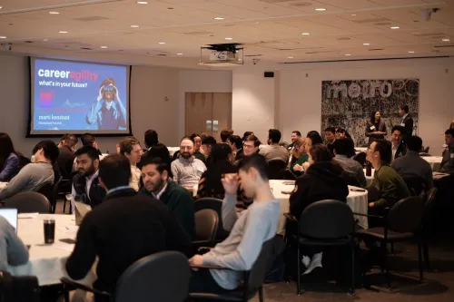
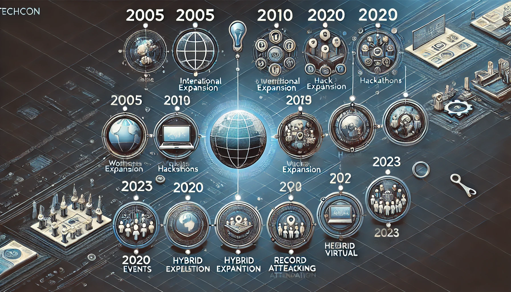
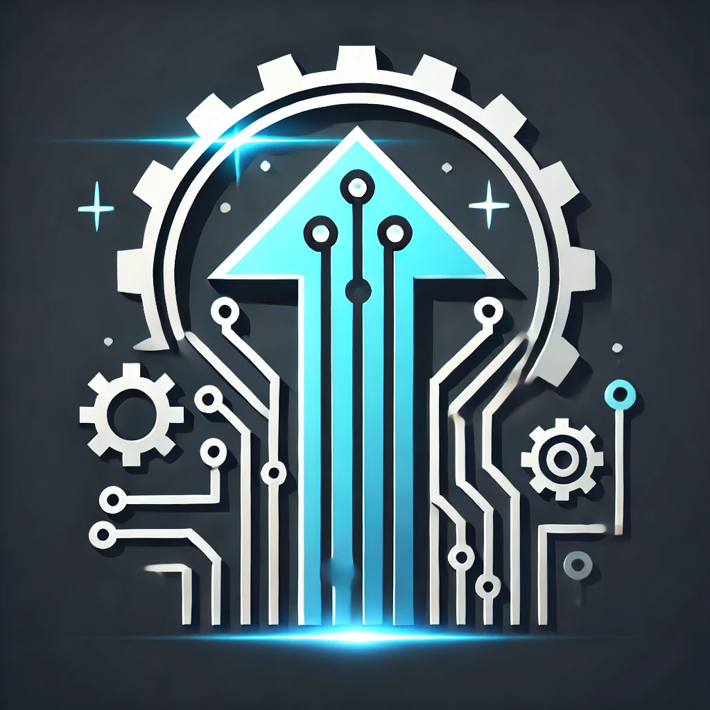

TechCon began in 2005 as a small gathering of tech enthusiasts and has grown into one of the most influential technology conferences in the world. The event brings together innovators, developers, and thought leaders to share ideas and shape the future of technology.

The first TechCon event in 2005.

The evolution of TechCon over the years.
Mission
At TechCon, our mission is to inspire innovation, foster collaboration, and drive progress in the tech industry. We believe in empowering individuals and organizations to harness technology for the betterment of society.
Inspiring innovation and collaboration.

Symbol of technological progress.
Notable Past Speakers
Dr. Jane Smith
Dr. Smith is a leading AI researcher known for her groundbreaking work in machine learning algorithms. At TechCon 2018, she presented her vision for ethical AI development.
Ms. Angela Brown
Angela Brown is a renowned entrepreneur who founded several successful startups. Her talk at TechCon 2021 inspired many with her journey and insights into the tech startup ecosystem.